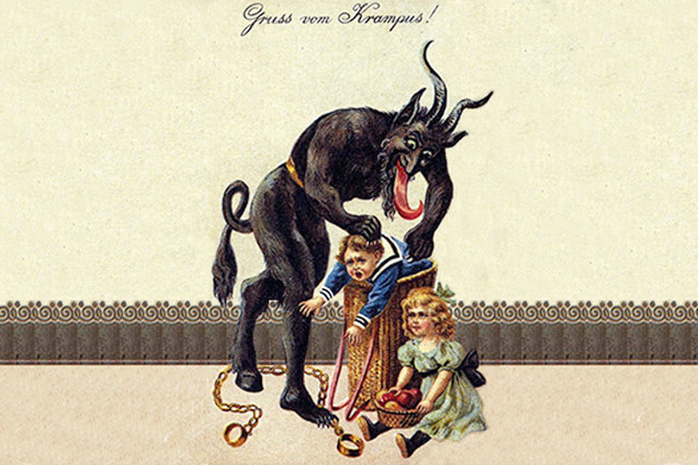

Bad Santa
British kids are well acquainted with Father Christmas, Santa Claus or Saint Nick, but will find something a little more sinister lurking around Austria. That's because it's here that a ghoulish creature called 'Krampus', the evil accomplice of St Nicholas, is said to wander the streets in search of badly behaved children.During the month of December, you can expect to see terrifying masked figures out and about scaring kids and adults alike with ghastly pranks. If this holiday tradition sounds like your kind of thing, be sure to check out the annual Krampus parade in Vienna.
